Virtual Photography as Spatial-Aesthetic Search
PhotoFlow asks an agent to enter a prepared 3D scene with no preselected camera pose, infer a suitable shot from scene information and a language intent, choose executable camera parameters, and render the final photograph.
Method Overview
PhotoFlow treats camera placement as finite-horizon feedback-driven search over executable camera states, including pose, look-at target, lens, aperture, and aspect ratio.
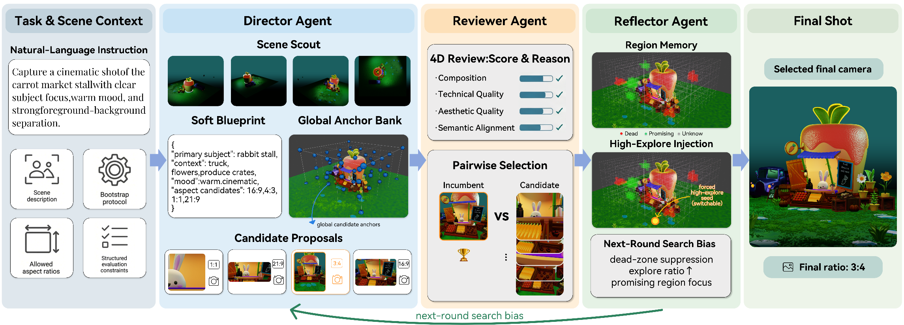
Qualitative Gallery
Selected PhotoFlow final renders from VPhotoBench. Hover over an image for brief task information, then click to open the full prompt and enlarged render.
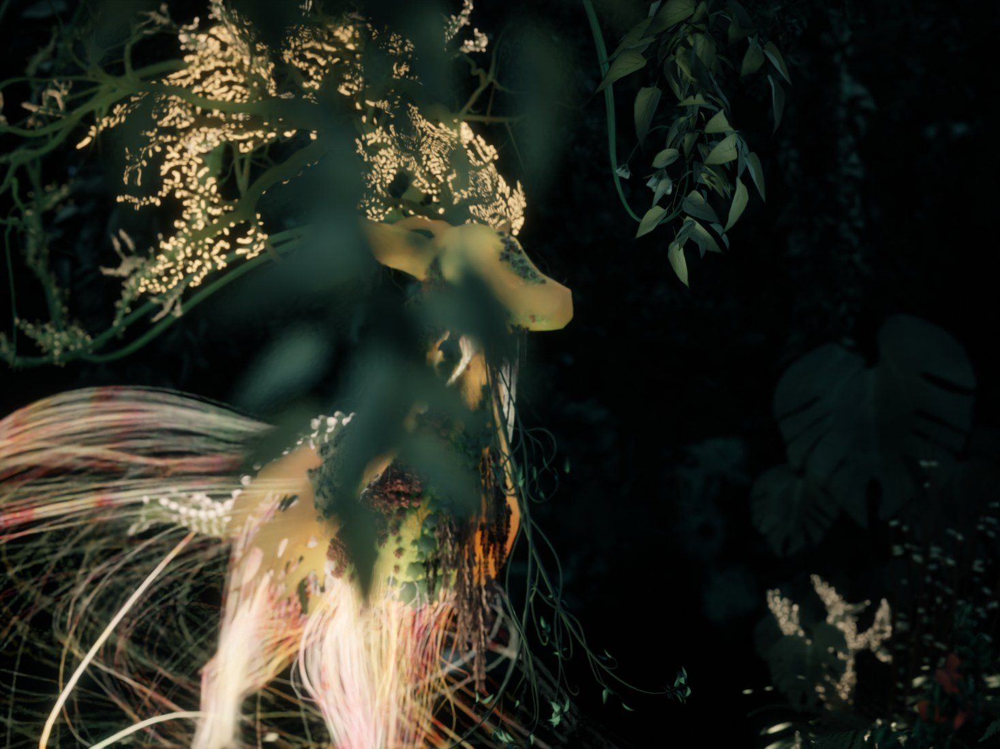
The scene is built entirely upon the dramatic tension between absolute darkness and intense self-generated luminescence, the deer's golden-white particle body functions as the scene's sole light source casting warm amber light onto the immediate forest floor and cool green light onto surrounding ferns, the dense forest backdrop is rendered in deep desaturated greens and near-blacks that absorb all ambient light and force complete visual attention onto the glowing subject, flowing hair-like particle strands suggest both physical movement and spiritual energy simultaneously, the overall atmosphere is one of sacred silence - as if the viewer has stumbled upon a divine forest apparition that exists between the natural and supernatural worlds, cinematic color grading with crushed blacks and selectively preserved warm highlights reinforces the mythological weight of the scene.
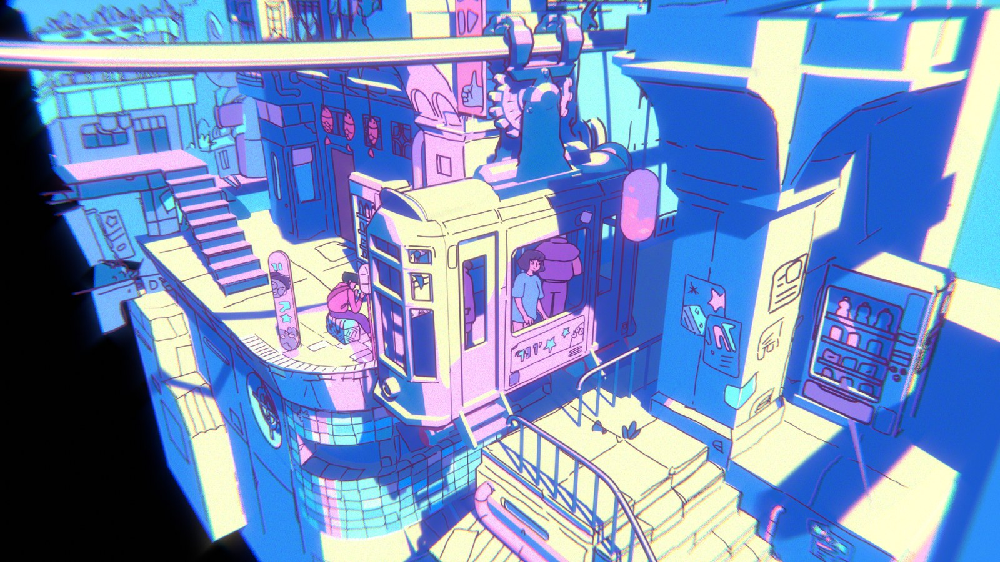
A vintage tram car serves as the dominant architectural subject occupying the central two-thirds of the frame, shot with a wide-angle lens from a slightly elevated three-quarter perspective looking slightly downward into the street scene, a crouching figure with skateboard positioned at the lower-center-left at street level serves as the primary human narrative anchor, a second standing figure visible through the tram window at mid-frame provides secondary human depth, the large decorative arch structure frames the entire right edge of the composition, stacked urban buildings cascade upward to the left with a giant cat mural anchoring the upper-left corner, camera distance calibrated to simultaneously reveal street-level human activity and the full vertical complexity of the surrounding urban environment.
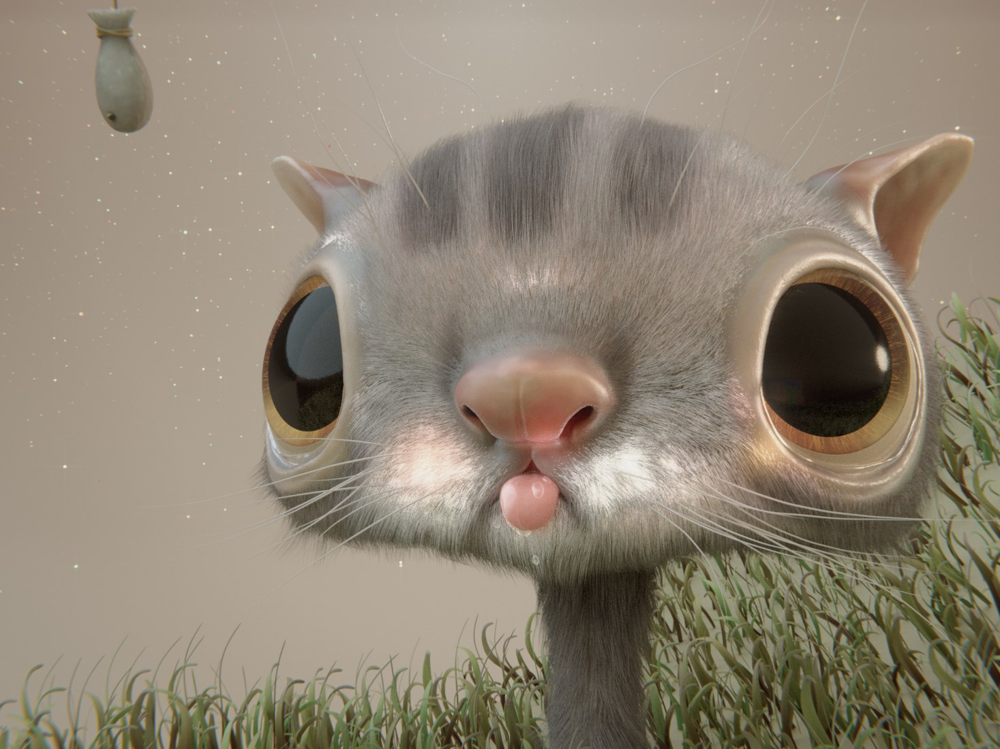
A round-faced stylized cat creature serves as the absolute hero subject, shot with a short telephoto lens from a direct eye-level angle precisely matching the animal's face height as it rests in the grass, the cat's face occupies the upper-left two-thirds of the frame with closed teardrop eyes positioned at the horizontal midline, the creature's body dissolves downward into dense grass that fills the lower third of the frame as a natural foreground layer, a small suspended object hangs from above in the upper-center acting as a subtle secondary focal accent, camera distance set to an intimate close-up range that renders individual fur texture and the delicate teardrop detail while retaining enough environmental context to establish the outdoor grass setting, depth of field set shallow with the grass foreground softly blurred to isolate the face as the singular point of crisp focus.
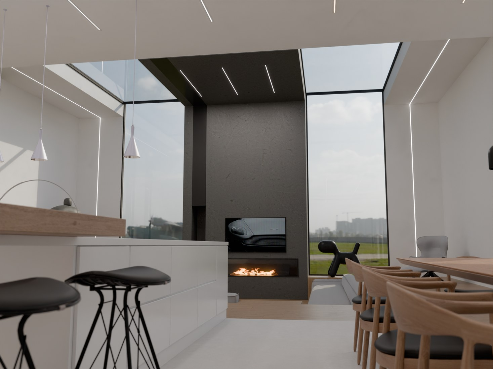
The composition is governed by strict bilateral symmetry - left sofa mirrors right sofa, left artwork mirrors right artwork, left wall mirrors right wall - creating a formal architectural rhythm that reinforces the space's luxury positioning, the central window functions as a luminous vanishing point that pulls all perspective lines and visual attention toward the garden view beyond, the floor lamp at center-frame provides a delicate vertical accent that punctuates the symmetry without disrupting it, the textured rug visible at the lower frame edge establishes material richness at the viewer's feet before the eye travels upward through the space, the staircase visible through the right-of-center passage introduces asymmetric depth that prevents the symmetry from becoming sterile, abstract wall artworks in black ink on white provide maximum tonal contrast against the warm neutral palette of all other surfaces.
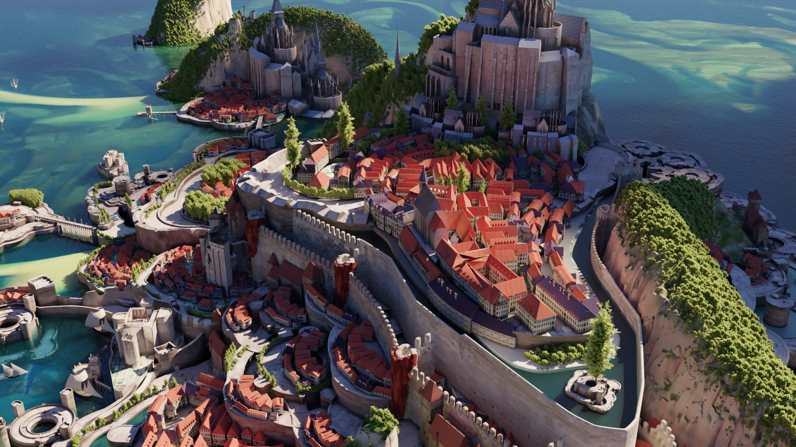
The scene is rendered with the visual grammar of a living fantasy map - architectural styles blend medieval European stone construction with fantastical scale exaggerations that signal a world operating under different physical and historical rules, warm overcast lighting bathes the entire city in even soft illumination that minimizes harsh shadows and maximizes the readability of complex architectural detail across the full aerial distance, the particle-scattered vegetation creates dense green accents that punctuate the warm stone tones of the architecture throughout the composition, the sense of inhabited complexity - suggesting centuries of organic urban growth rather than planned construction - is the scene's primary atmospheric achievement, the overall mood is one of epic world-building grandeur: the feeling of encountering a civilization fully realized and awaiting exploration.
The stylized animation aesthetic renders snow, characters and environment in soft rounded forms communicating safety and playfulness rather than harshness, cool blue-white snow tones are counterbalanced by the warm earth colors of the dog's fur and the girl's brightly colored winter clothing, diffused overcast winter daylight provides even illumination that eliminates harsh shadows and renders every surface in clean readable values, the overall atmosphere is one of pure uncomplicated childhood joy - the specific happiness of a snowy day when every surface becomes a playground.
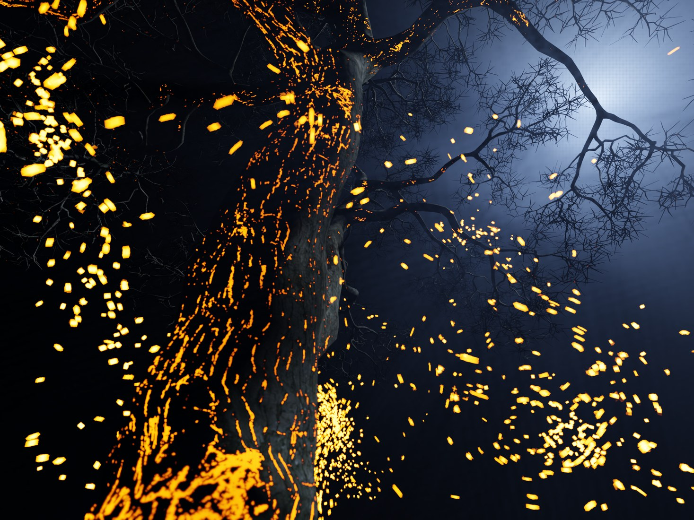
A dramatically bare and ancient tree occupies the dominant portion of the frame as the primary structural subject, shot with a wide-angle lens from a very low angle looking upward through the branch canopy, the massive trunk enters the frame from the lower-center and its primary branches spread outward to fill the upper two-thirds of the composition, scattered glowing amber and orange ember particles cling to and float away from every branch surface creating a living constellation of light, a luminous full moon positioned in the upper-center behind the branch network provides the scene's primary backlight source.
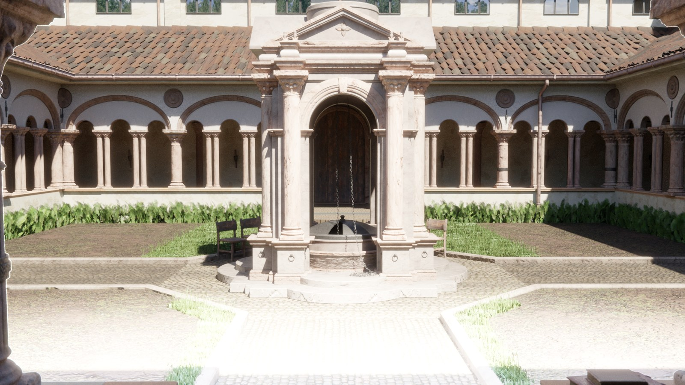
The succession of arched columns receding from the immediate foreground to the far background creates a powerful rhythmic perspective system drawing the eye deeply into the courtyard space, the shadowed arcade foreground zone contrasts dramatically with the sunlit courtyard center creating a threshold effect that separates the viewer's shaded position from the luminous destination beyond, the fountain structure at the courtyard center aligns precisely with the frame's central vertical axis providing a compositional anchor for the symmetrical colonnaded architecture, foreground books and wooden implements scattered on the workbench establish a narrative of scholarly monastic activity giving the space human presence without requiring human figures.
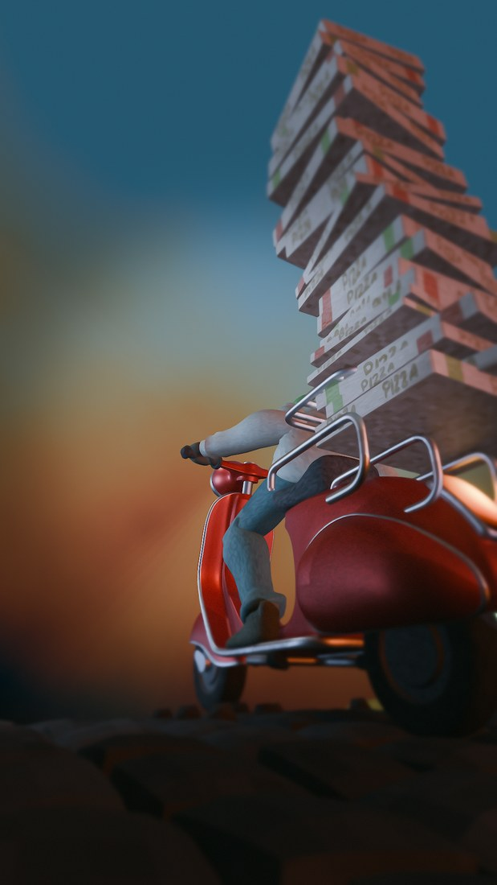
A stylized cartoon delivery scooter with its rider and impossibly tall stack of pizza boxes serves as the singular hero subject, shot with a wide-angle lens from a very low angle looking upward at approximately 20 degrees, the red scooter occupies the center-left of the frame with the rider's body and the towering pizza stack rising vertically to dominate the upper two-thirds of the composition, the cobblestone street surface fills the foreground establishing the ground plane, a street lamp post enters the frame from the right edge creating a secondary vertical element, camera distance set close to the scooter to maximize the comic distortion of the pizza stack's impossible height.
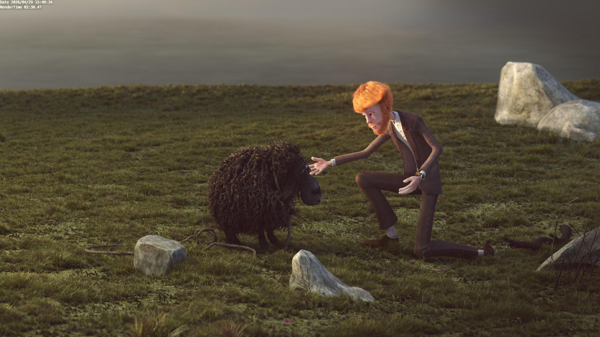
The rendering achieves a high-quality stylized animation aesthetic that balances physical believability with cartoon expressiveness - the sheep's wool is rendered with genuine fiber complexity while maintaining the rounded simplified silhouette of an illustrated character, the dramatic sky with its dark storm clouds and warm horizon glow creates cinematic lighting that elevates a fundamentally comic premise to something approaching genuine narrative weight, the grassland environment rendered with scattered vegetation and subtle ground texture establishes a specific natural setting without overwhelming the character-focused composition, the overall atmosphere captures the precise tonal register of contemporary animated feature storytelling - finding genuine emotional stakes within inherently absurd situations.
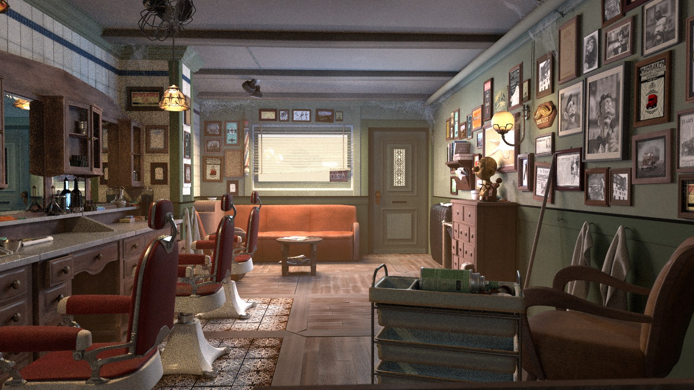
A fully detailed vintage American barbershop interior is presented as the primary environmental subject, shot with a wide-angle lens from a low eye-level perspective approximately 120cm above the worn wooden floor, two classic red leather barber chairs dominate the center-foreground of the frame facing the viewer, a long counter with mirrors and grooming equipment lines the left wall receding into depth, the rear wall is entirely covered with framed photographs and portraits creating a dense textural collage, camera positioned just inside the entrance to maximize the spatial depth revelation from entrance to far rear.
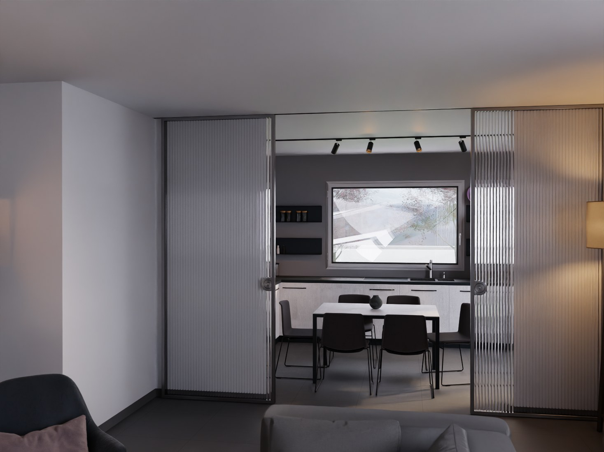
The window apertures function as framing devices within the frame - each window border creates an independent compositional rectangle containing and organizing its respective interior view, the white wall surface between and around the windows establishes a strong geometric grid imposing rational order on the domestic interior it reveals, the slight asymmetry between the narrow bedroom window and the wider living area window creates compositional variety preventing the facade from reading as purely symmetrical, interior furnishing visible through each window provides scale reference and domestic narrative context giving the architectural presentation human dimension.
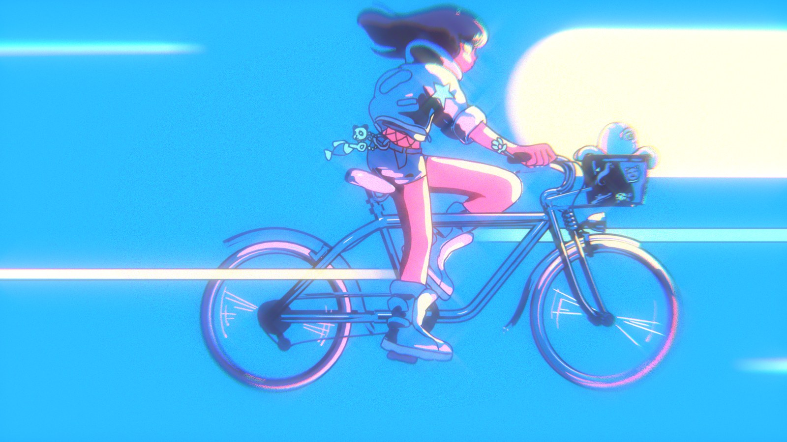
A stylized cycling girl and her small robot passenger serve as the dual hero subjects within a flat illustrated composition, shot from a perfectly perpendicular side profile angle that eliminates all perspective depth, the girl and bicycle occupy the left-center of the frame in complete lateral profile view with both figures and the bicycle visible in their entirety as flat silhouette forms, horizontal speed-line elements streak across the blue background at mid-frame height suggesting rapid lateral motion, the composition is treated as a pure 2D illustration rather than a 3D scene - depth communicated entirely through overlapping flat shapes.
A tall-masted sailing ship serves as the singular hero subject silhouetted against an enormous full moon rising from the ocean horizon, shot with a moderate telephoto lens from a low eye-level angle just above the ocean surface, the ship occupies the center of the frame with its full mast-to-hull profile visible against the luminous moon disk, the moon's diameter is approximately twice the height of the ship creating a dramatic scale relationship that emphasizes the vessel's vulnerability within the natural environment, ocean waves fill the foreground from the bottom frame edge to the waterline establishing the viewer's position at sea level, camera distance calibrated to keep the ship's complete silhouette within the moon's disk perimeter creating a perfectly framed compositional relationship.
The mug's cylindrical form positioned at the left-center creates the dominant vertical anchor around which all other elements are organized, the saucer's circular white form at the base of the mug provides a clean geometric platform that separates the hero object from the scattered bean environment below, the two chocolate pieces on the saucer positioned at the lower-right golden ratio zone create secondary focal interest that extends the viewer's engagement beyond the mug itself, scattered coffee beans receding from sharp foreground to soft background create a powerful depth gradient that gives the flat tabletop surface three-dimensional spatial richness, the warm golden light bloom in the upper-right corner creates a luminous environmental backdrop that provides chromatic warmth against the cool blue of the mug - establishing the composition's primary chromatic tension.
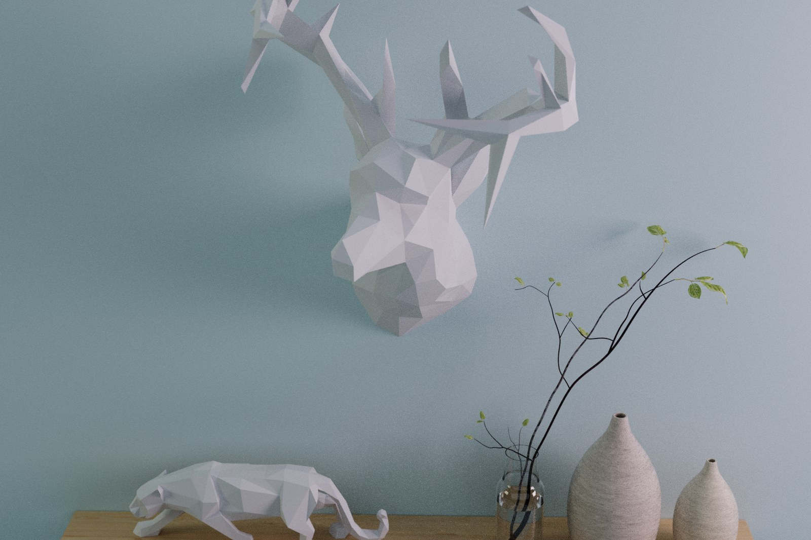
The scene is rendered in a high-key Nordic interior aesthetic - the pale teal-sage wall color, natural oak shelf surface and white sculptural objects combine in a palette of extreme chromatic restraint that communicates designed serenity rather than accidental neutrality, soft diffused daylight from an off-frame window source wraps every surface in even shadowless illumination that highlights material texture without creating dramatic contrast, the low-poly geometric treatment of both the deer head and panther figurine reads simultaneously as contemporary art object and mass-market decorative product - occupying the precise aesthetic territory of Scandinavian design retail, the bare branch in the glass vase introduces the only organic irregular element within an otherwise geometrically controlled composition, the overall atmosphere communicates the aspirational simplicity of Nordic interior design - a visual philosophy in which restraint, material honesty and considered proportion are the highest form of domestic beauty.
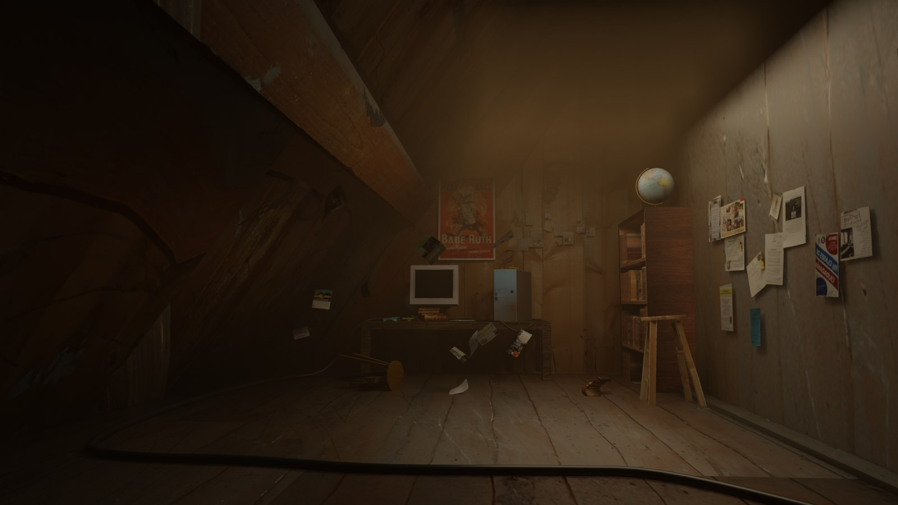
A cluttered American vintage attic room is presented as the primary environmental subject with no single hero object, shot with a wide-angle lens from a low first-person eye-level perspective approximately 100cm above the wooden floor, the view extends from the immediate foreground floor surface across the full width of the room to the far rear wall, a Babe Ruth sports poster dominates the left wall at mid-height functioning as the scene's primary graphic anchor, an old television monitor sits on a wooden cabinet below the poster, a globe and bookshelf occupy the right-center background, a baseball bat enters the frame from the extreme right foreground creating an intimate close proximity prop, papers and objects are scattered across the floor in a mid-action frozen state suggesting a moment of disruption rather than settled habitation.
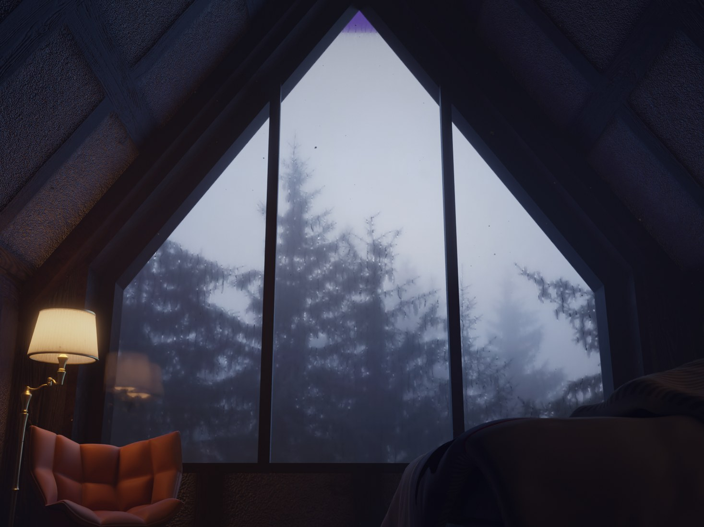
A cozy A-frame cabin bedroom interior is presented with the triangular floor-to-ceiling window as the compositional hero element, shot with a standard lens from a low seated eye-level perspective approximately 80cm above the wooden floor looking directly toward the apex window, the triangular window frame occupies the upper two-thirds of the frame revealing a rain-soaked pine forest beyond, an orange armchair and floor lamp positioned in the left-center foreground serve as the scene's primary warm interior anchors, a bed partially visible at the lower-right edge establishes the room's sleeping function, camera distance set from the room's rear wall to capture the complete triangular window geometry from floor junction to apex while keeping both the armchair and the exterior forest view within the same frame.
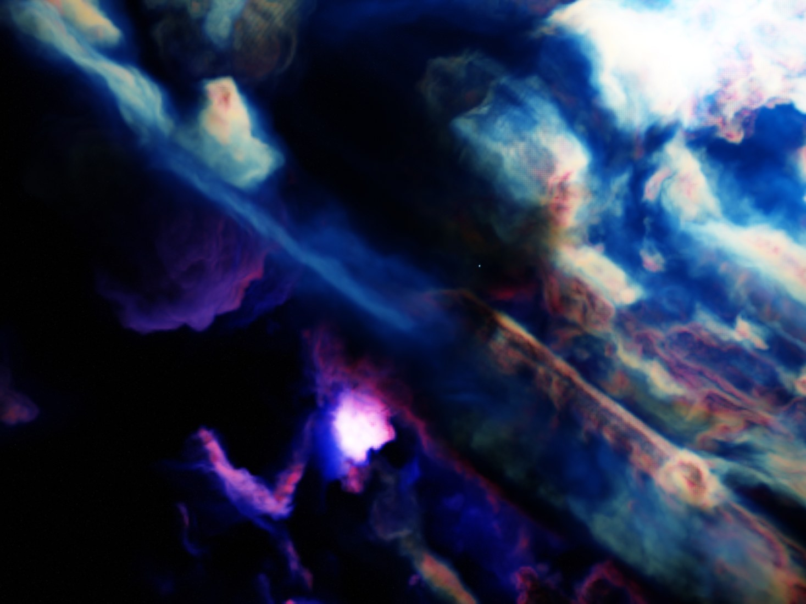
The scene is rendered with the chromatic language of Hubble Space Telescope false-color nebula imaging - the deep blue-purple of ionized hydrogen, the warmer rose-red of emission regions and the teal-cyan of reflected starlight combine in a palette that is simultaneously scientifically referenced and aesthetically extraordinary, the volumetric rendering of the gas clouds achieves genuine three-dimensional depth - the clouds read as occupying real space rather than as painted backdrops, with clearly distinguishable near and far zones that reward extended spatial reading, the single star point provides essential chromatic contrast - its pure white brightness against the surrounding colored gas emphasizes the nebula's own luminosity and reminds the viewer that this is a stellar nursery where new suns are being born, the overall atmosphere communicates the most extreme version of the cosmic sublime - a scale of beauty so far beyond human comprehension that it can only be experienced as pure aesthetic overwhelm, the specific emotion of encountering something so vast and so indifferent to human existence that it temporarily dissolves the boundaries of the self.
An open ancient manuscript book serves as the absolute primary hero subject occupying the dominant central portion of the frame, shot with a macro lens from a high oblique angle approximately 60 degrees above horizontal looking downward at the spread pages, the open book fills approximately 70% of the frame with its aged parchment pages fully revealed showing hand-drawn illustrations and old script text, a brass magnifying glass rests on the right page at the lower golden ratio intersection providing a secondary focal element, a lit candle and candleholder occupy the lower-right edge while a partially visible hourglass stands at the upper frame edge, the cracked dark wooden surface beneath the book provides a textural foundation that reinforces the scene's antiquity, camera distance calibrated to render individual ink strokes of the manuscript text and the dragon/bird illustration on the left page at maximum legibility while keeping both page spreads fully within the frame.
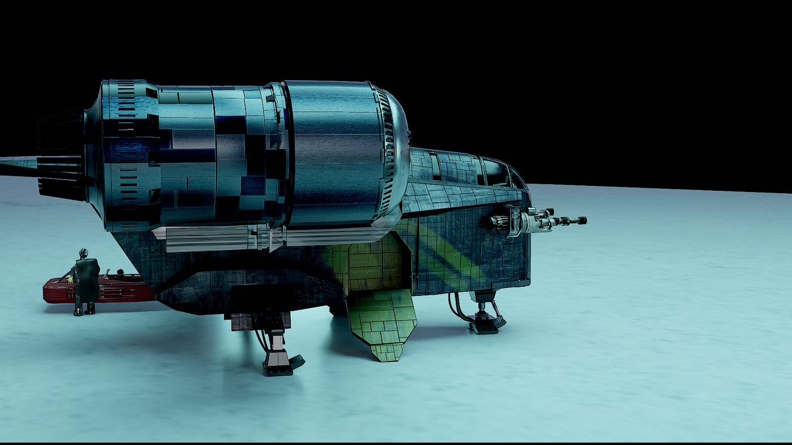
Overall cold teal-grey palette projects an oppressive industrial melancholy, flat overcast diffused lighting eliminates harsh shadows and renders the ship's metal hull in even, desaturated tones that emphasize surface wear and mechanical texture, thin ground fog unifies the lower third of the frame and visually anchors the ship to the environment, the single red accent light on the fuselage and the warm tones of the hover vehicle provide the only chromatic contrast against the monochromatic scene, low saturation combined with slight atmospheric haze creates a desolate, rain-soaked airfield atmosphere that is simultaneously cinematic and grounded.
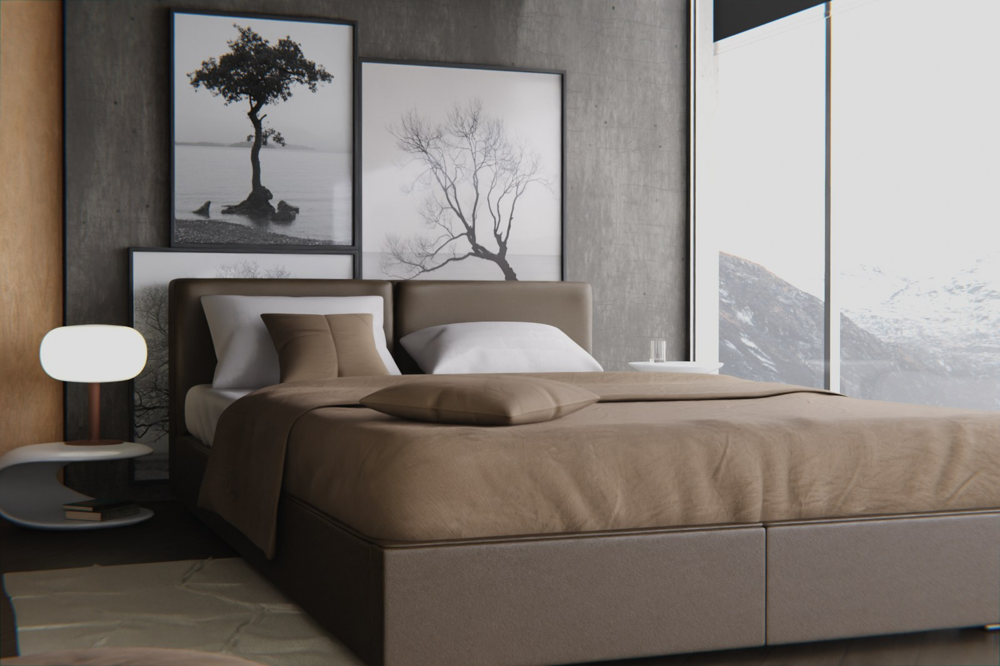
The scene is rendered in an exclusively warm neutral palette - taupe, camel, warm grey and natural linen - in which every material choice communicates considered luxury through restraint rather than ostentation, natural daylight flooding through the floor-to-ceiling window provides the dominant light source creating gentle directional shadows that reveal the tactile complexity of upholstered and textile surfaces, the exposed concrete ceiling and warm wood floor create a deliberate material tension between industrial rawness and domestic refinement that defines the contemporary luxury aesthetic, the black-and-white photographic artworks above the bed provide graphic tonal contrast that anchors the warm neutral palette, the overall atmosphere communicates the aspirational quality of a boutique hotel suite - impeccably appointed, materially honest and designed to make sleep feel like an act of considered indulgence.
Public Release Plan
The repository is being organized for a staged release of the agent, benchmark metadata, evaluation scripts, and reproduction materials.
Agent Code
Director-Reviewer-Reflector implementation, prompts, JSON schemas, and run configurations.
VPhotoBench
Scene registry, task specifications, benchmark construction notes, and asset metadata.
Evaluation
External metric aggregation, baseline configs, ablation summaries, and selected logs.